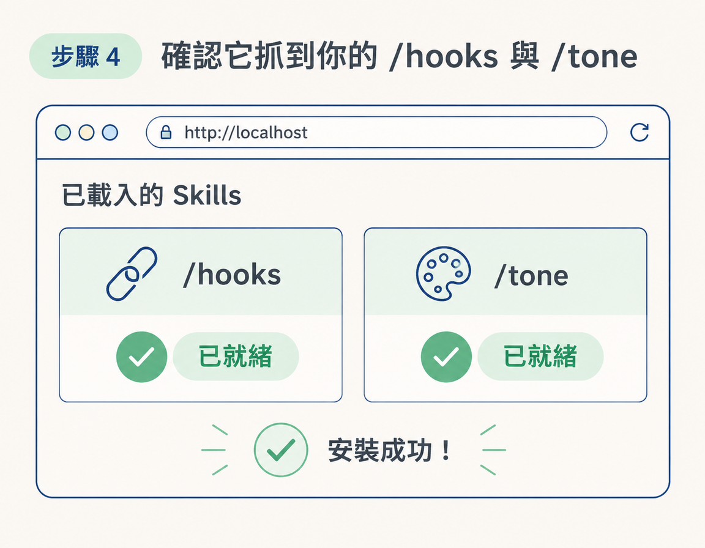

這一步接在建立 /hooks 和 /tone 之後，目的是把 RUBRIC Scripts 工作台在你的電腦上開起來。你會準備好 zip 檔與安裝指令，交給 agent 安裝，再確認工作台能讀取這兩個 skill。完成後，你就有地方用候選點子生成腳本。
這套安裝流程不需要你寫程式：agent 會依照安裝指令與 README 處理安裝，你只要照步驟確認結果。完成後，你會得到一個能在瀏覽器開啟的本機腳本工作台，並且會自帶 /rubricscripts skill。
動手前先確認三件事。第一，你已經有前兩個節點建立的 /hooks 和 /tone；如果還沒有，安裝後也可以依照提示補上。第二，你有可使用的 agent 平台，例如 Claude Code、Codex，或你慣用的平台。第三，你的電腦能執行本機服務；Mac、Windows 和 Linux 都可以。
到 RUBRIC course 的 Micro Apps 區，下載 RUBRIC Scripts 的 zip 檔，並複製同一頁提供的「安裝指令」（install prompt）。下載檔和安裝指令都在那裡。
先不用自己解開 zip。這套流程是把安裝指令交給 agent，讓它讀取 README 並準備環境；所以此時要先備妥的是那段指令。
打開 agent，把剛才複製的安裝指令整段貼上並送出。agent 會依照 README 的說明安裝並啟動軟體。若它在過程中詢問需求，照實回答即可。
注意：安裝指令的原文由 RUBRIC course 的下載頁提供，本課程逐字稿沒有附上。請使用下載頁提供的版本，不要以其他文字代替。[needs source]
安裝完成後，環境裡也會有 /rubricscripts 這個 skill。skill 是 agent 可使用的一種能力；之後你可以用它來生成腳本。安裝完成時會看到的指令如下：
# 安裝完成後，RUBRIC Scripts 會自帶這個 skill：
/rubricscripts這個 skill 不必另外申請。之後要生稿時，執行這個指令，再把點子接在後面即可。
安裝後，agent 會提供一個連結，多數情況下會是 localhost 網址。localhost 指的是你的電腦；也就是說，這套軟體是在本機執行，而不是一個架設在網路上的雲端網站。課程指出，即使斷網，服務原則上仍會在本機運作。
點開 agent 提供的連結，工作台就會在瀏覽器中開啟。課程示範使用 Chrome；你會在頁面上看到腳本清單，之後生成的稿件也會放在這裡。
預期結果：瀏覽器開啟一個本機位址的頁面，而不是需要登入的陌生網站。
工作台開啟後，檢查它是否讀取到 /hooks 和 /tone。RUBRIC Scripts 預設會尋找這兩個 skill；如果還沒建立，工作台會提示你如何補上。
如果工作台讀取成功，後續生成腳本時就能使用你的語氣（/tone）和 hook 品味（/hooks）。這也是它和直接在對話框裡請 agent 寫稿不同的地方。若它提示缺少 skill，先照著引導建立，再回來確認。
預期結果：頁面辨識出你的 /hooks 與 /tone，沒有「找不到 skill」的警示。

頁面上可能會出現影片預覽，以及 TikTok、Instagram、Threads、YouTube Shorts 等平台區塊。這些內容會在 Wk4 的發布課程中介紹，現在先略過即可。這一步只需要完成兩件事：開啟工作台，並確認它讀得到你的兩個 skill。
完成安裝的順序是：下載 zip 並複製安裝指令、把指令交給 agent、開啟 agent 提供的 localhost 連結，再確認工作台讀得到/hooks與/tone。安裝完成後會自帶/rubricscriptsskill；影片和平台區塊則留到 Wk4 再看。上一節已說明本機執行與 agent-ready 的原因，這一節的任務是把工作台確實跑起來。
完成後，你應該能在瀏覽器打開工作台，並確認它辨識出 /hooks 和 /tone。下一節就會把候選點子交給 /rubricscripts，生成第一批腳本。